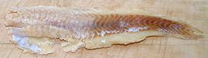

Native to the North Pacific through the Sea of Japan, around Alaska and down to Carmel, California, Alaska Pollock are the largest fish harvest in the world at 3 million tons per year. Most is made into sirimi (artificial crab meat) and McDonald's fish sticks. This fish can grow to 35 inches and 8-1/2 pounds, but the photo specimen was 16-1/4 inches and 1 pound 4 ounces. Alaska Pollock is considered a sustainable catch by marine ecologists, IUCN Red List NE (Not Evaluated). Norway Pollock is a very rare fish and considered near threatened. It is genetically the same as the Alaska Pollock but has a few minor differences in appearance.
Actually, the major threat to Alaska Pollock is the mass harvesting of krill for the highly profitable manufacture of Omega-3 fatty acid supplements currently in fad status. This fish (and many whales) subsist mostly on krill, a tiny shrimp-like animal. Actual benefits of Omega-3 supplements are still rather uncertain (except according to those selling the pills), and excessive use has been linked to aggressive prostate cancer in male humans, so it's best to leave plenty for the fish and whales.
More on Cod, Pollock, Haddock, Hake &
Whiting.
This is a perfect fish for those who don't like fish - you can't taste it. Aside from being very bland, it is limp, eats low on the food chain, has little internal integrity, a weak stomach, and disintegrates entirely when exposed to heat. I'd propose it's name be changed to "Congress Fish" except for one discrepancy - it has a backbone.
Pan frying is not a good idea. Fillets dusted with rice flour and fried in very shallow oil, as I usually do, can be disastrous. When turned skin side down, the skin instantly becomes glue and sticks to the pan, even through a heavy dusting. Then, when you try to move it, it disintegrates. Perhaps frying can work if the fillet is heavily battered and deeper oil is used. I normally recommend against that method because you end up tasting only batter and oil, not fish. With this fish, though, that's all the flavor you'll get anyway.
Briefly poached, half fillets holds together well enough to carefully remove to a plate, but it's not easy to eat because it disintegrates when you touch it. All in all, I think McDonalds has the right idea - grind it up, mix it with plenty of binders and extenders, and use it for machine made "fish sticks".

Salted Pollock: Goya, a distributer of mostly Hispanic foods, is currently (2018) selling salted pollock fillets from China in one pound packages, presumably as a low cost substitute for salted Cod. The photo specimen was 12-3/4 inches long and weighed 5-3/8 ounces. Soaked for 12 hours to remove salt it weighed 6-3/8 ounces. Flavor was similar to salted Cod but noticeably lighter, and the texture was much finer and softer. It could take only 5 minutes simmering before it started to flake apart. It was purchased from a multi-ethnic market in Los Angeles (Sunland) for 2017 US $5.49 / pound.
Buying: Fresh fish are often available in markets serving a Korean community. I suspect they use it to make fish balls or something like that. Dried pollock is very common in just about all Asian markets, but particularly Korean. Frozen pollock fillets are widely available, even in regular supermarkets. It's very inexpensive and worth at least half that. Frozen Pollock fillets from China are packed with a "moisturizer" (sodium tripolyphosphate), so those fillets will shrink a lot in cooking by any method.
Scales: This fish is incompletely covered with scales that are tiny and thin. They scrape off easily as a gray slush with no flying about.
Cleaning: This fish is full of mushy stuff, and the belly is so weak it often breaks, spilling gooey guts all over the place. The body cavity extends well behind the vent. Gills pull out fairly easily, but the collar will probably pull apart when you do that - that's not a problem since you're either going to discard the whole head or break it apart anyway.
Fillet: This fish is not real easy to fillet because it's bone / fin structure is discontinuous and not easy to follow, it's very limp which makes it clumsy to handle, and the flesh is soft and prone to fall apart. I've had the best success with this method:
Yield: A 1 pound 4 ounce fish yielded 9-1/4 ounces of skin-on fillet (46%) and 8-5/8 ounces skin-off (43%).
Skin: The skin has very moderate shrink, but quickly turns to sticky goo when heated. It does have a somewhat stronger taste than the flesh, you can actually taste it. Raw skin is quite tough, and the flesh very tender, so it's easy to skin with no flesh lost using the standard long knife and cutting board Method.
Stock: The head, bones and fins, simmered slowly for 30 to 40 minutes, make a serviceable stock with inoffensive flavor and almost no oil. Remove what there is using your gravy separator. For details see our Fish Stock page.
sf_pollz 05 r 180208 - www.clovegarden.com